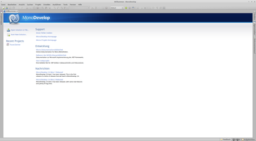
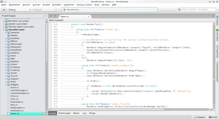

MonoDevelop
Dieser Artikel wurde für die folgenden Ubuntu-Versionen getestet:
Ubuntu 14.04 Trusty Tahr
Zum Verständnis dieses Artikels sind folgende Seiten hilfreich:
MonoDevelop  ist eine integrierte Entwicklungsgebung für Programmiersprachen, die den ISO/IEC/ECMA spezifizierten Common Language Infrastructure (CLI) Standard implementieren, deren bekanntester Vertreter C# ist.
ist eine integrierte Entwicklungsgebung für Programmiersprachen, die den ISO/IEC/ECMA spezifizierten Common Language Infrastructure (CLI) Standard implementieren, deren bekanntester Vertreter C# ist.
Ein frühes Alleinstellungsmerkmal war die Möglichkeit, mit einem grafischen Editor plattformunabhängige Benutzeroberflächen mit Gtk# zu entwerfen. Die Bibliothek wird von MonoDevelop selbst zur Darstellung verwendet. Die unter Windows verwendeten WinForms basierten Programme können kompiliert, aber nicht grafisch editiert werden. Applikationen auf Basis von Microsofts WPF sind hingegen nicht lauffähig.
|  |
| MonoDevelop |
Einst begann das Projekt als Portierung von SharpDevelop nach Linux, wobei die Entwicklungszweige stark voneinander abgedriftet sind. Heutzutage ist MonoDevelop die Basis für das kommerziell vertriebene Xamarin Studio , welches Programmierern unter Microsoft Windows und Mac OS X die kostenpflichtige Möglichkeit bietet, für iOS und Android Applikationen zu erstellen.
Installation¶

MonoDevelop befindet sich den offiziellen Paketquellen. Folgendes Paket muss installiert werden [1]:
monodevelop (universe)
 mit apturl
mit apturl
Paketliste zum Kopieren:
sudo apt-get install monodevelop
sudo aptitude install monodevelop
Je nach Bedarf sind folgende Erweiterungen der Hauptanwendung sinnvoll.
monodevelop-nunit (universe, um Modultests mit NUnit zu schreiben)
monodevelop-versioncontrol (universe, integriert Git und Subversion in die IDE)
monodevelop-database (universe, für Datenbank-Entwickler)
mit apturl
Paketliste zum Kopieren:
sudo apt-get install monodevelop-nunit monodevelop-versioncontrol monodevelop-database
sudo aptitude install monodevelop-nunit monodevelop-versioncontrol monodevelop-database
Fremdquellen¶
Aktuelle Versionen erhält man aus den offiziellen Paketquellen des Mono-Projekts:
Um die Fremdquelle zu authentifizieren, kann man den Signierungsschlüssel mit folgendem Befehl importieren:
sudo apt-key adv --recv-keys --keyserver keyserver.ubuntu.com 3FA7E0328081BFF6A14DA29AA6A19B38D3D831EF
Um aus der Fremdquelle zu installieren, muss man die folgenden Paketquellen freischalten:
Hinweis!
Zusätzliche Fremdquellen können das System gefährden.
deb http://download.mono-project.com/repo/ubuntu VERSION main
Benutzung¶
|  |
| geöffnete OpenRA-Projektmappe |
Das Programm wird über den Befehl monodevelop bzw. durch Anklicken von *.sln Projektdateien gestartet. Die Oberfläche ähnelt von der Benutzerführung einem Musikspieler bzw. Web-Browser. Rechts oben befindet sich eine Suchleiste, die sich mit Strg + , fokussieren lässt, um den Quelltext des geöffneten Projekts zu durchforsten.
Ansichten¶
Über "Ansicht -> Debug" kann zu einer Perspektive gewechselt werden, die Quelltextdateien, Haltepunkte und Kompilierungsfehler anzeigt. Mit "Ansicht -> Projektmappe" werden hingegen die Klassen hierarchisch dargestellt.
Navigation¶
Durch Markieren von Funktionen im Quelltexteditor und Drücken von F12 wechselt man zur Deklaration der aufgerufenen Methode. Mit ⇧ + F12 kann man weitere Verweise suchen, um zu schauen, wo und wie an anderer Stelle die gewählte Funktion aufgerufen wird.
Mittels F8 wird das geöffnete Projekt gebaut. Mit Strg + F8 wird das Projekt um bereits kompilierte Teile bereinigt und von Grund auf neu gebaut.
Kompilierung¶
Durch Drücken auf F5 wird das Projekt gestartet, wobei ein Debugger mitläuft, der das Programm etwas verlangsamt, dafür aber im Fehlerfall deutlich mehr Informationen bereitstellt. Dies ist während der Entwicklung sowie gezielter Fehlersuche praktisch. Mit Strg + F5 wird das Programm wie später vom Anwender ohne Debugger gestartet.
Erweiterungsmöglichkeiten¶
Über "Tools -> Add-In-Manager" lassen sich Erweiterungen aus dem MonoDevelop Add-in Repository installieren. Diese können unter anderem die IDE funktionell erweitern oder Produktivitätsverbesserungen ermöglichen. Es sind jedoch auch Erweiterungen für weitere Programmiersprachen installierbar. Im Standardumfang sind C/C++, C#, ILAsm (Intermediate Language Assembler, eine Zwischensprache, die von der Mono oder .NET Laufzeitumgebung in Maschinencode übersetzt wird) und VisualBasic.NET enthalten. D, Lua und F# werden von der Gemeinschaft bereitgestellt. Zudem existieren Vorlagen für die Spiele-Engine Unity und MonoGame .
Beispiel: ein "Hallo Welt!" Programm¶
Durch Auruf von "Datei -> Neu -> Projektmappe -> Konsoleprojekt" erscheint ein Assistent, mit dem ein fertiges Hallo-Welt-Programm erstellt wird:
1 2 3 4 5 6 7 8 9 10 11 12 | using System; namespace Test { class MainClass { public static void Main(string[] args) { Console.WriteLine("Hello World!"); } } } |
Die Datei kann man wie beschrieben mit F5 direkt aus MonoDevelop starten. Beim Kompilieren entsteht eine .exe-Datei heraus, aber in Wirklichkeit handelt es sich um ein Abbild in einer Zwischensprache, das in etwa wie folgt aussehen würde:
1 2 3 4 5 6 7 8 9 10 | .assembly Program { } .assembly extern mscorlib { } .method public static void Main() cil managed { .entrypoint .maxstack 1 ldstr "Hello World" call void [mscorlib]System.Console::WriteLine(string) ret } |
Die erhaltene Binärdatei lässt sich auch über ein Terminal[4] mit folgendem Befehl ausführen:
mono Programm.exe
 Übersichtsartikel
Übersichtsartikel- Erstellt mit Inyoka
-
 2004 – 2017 ubuntuusers.de • Einige Rechte vorbehalten
2004 – 2017 ubuntuusers.de • Einige Rechte vorbehalten
Lizenz • Kontakt • Datenschutz • Impressum • Serverstatus -
Serverhousing gespendet von